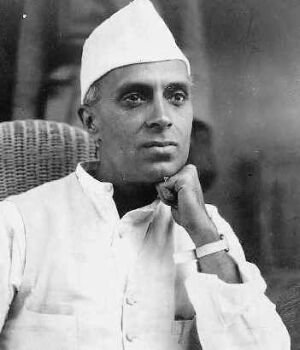

Jawaharlal (Cevahirlal) Nehru

Jawaharlal Nehru, Kasým 1889'da Allahabad'da doðdu. Eðitim görmek üzere Ýngiltere'ye gitti. Harrow ve Cambridge'de kimya, zooloji ve botanik alanýnda eðitim gördü. Bu eðitiminin akabinde iki yýl da hukuk eðitimi aldý. Bu arada Ýngiliz ve Avrupa edebiyatý ile tarihi üzerinde incelemelerde bulundu. Hindistan'a dönmeden önce Ýngiliz barosuna da kaydýný yaptýrdý. Hindistan'a dönen Nehru avukatlýk yapmaya baþladý.Hindistan'da iþ hayatýný sürdüren Nehru 1916 yýlýnda Keþmirli Brahman bir ailenin kýzý olan Kamala Kaul ile evlendi. Bir yýl sonra bir kýzý oldu. Siyasete ilgi duyduðu için mesleðini býrakarak politikaya atýldý. O sýralarda Ýngiliz sömürgesi olan Hindistan'da bazý olaylar çýkmaya baþlamýþtý. Amritsar'da halkýn üzerine ateþ açan Ýngiliz polisi 379 kiþiyi öldürdüðü gibi, 1200 kiþiyi de yaraladý. Nehru bu katliamdan sonra siyasete atýldý.
Nehru ile birlikte ailesi de aktif olarak politikanýn içinde yer alarak gazete çýkarmakta ve babasý tarafýndan idare edilmekteydi. Meydana gelen söz konusu geliþmelerden sonra, Ýngilizler, Hindistan'da büyük bir tutuklama giriþimini baþlattýlar. Nehru da babasý ile birlikte tutuklandý ve altýþar ay hapis cezasýna çarptýrýldýlar. Bir süre hapis yattýktan sonra serbest býrakýldýlar.
Siyasete atýldýktan sonra Gandhi'nin yardýmcýlýðýný yapan Nehru, zamanla parti içindeki konumunu daha da güçlendirdi. (Kongre) Partinin 1923 yýlýnda yapýlan kongresinde genel sekreterliðe seçildi. Eþinin rahatsýzlýðý sebebiyle 1926 yýlýnda Avrupa'ya gitti. Bu gidiþi sýrasýnda birçok siyasetçi ile tanýþýp fikir alýþ veriþinde bulundu. Hindistan'daki mücadeleleri için taraftar bulmaya çalýþtý. Ayrýca, 1927 yýlýnda Brüksel'de toplanan, Ezilen Uluslar Kongresi'ne de katýldý. Buraya gelen Asya ve Afrika temsilcileriyle tanýþtý. Bu tarihten sonra, mücadele tarzýnda bir radikalleþmenin olduðu görüldü.
1928 yýlýnda Moskova'ya giden Nehru, Sovyet idarecileriyle görüþmelerde bulundu. 1929 yýlýnda mensubu bulunduðu Kongre Partisi'nin kongresi yapýldý. Bu kongrede Gandhi tarafýndan baþkanlýða aday gösterildi ve parti baþkanlýðýna seçildi. Bir yýl sonra da Gandhi tarafýndan kaleme alýnan Baðýmsýzlýk Bildirgesi'yle, Hindistan'da "sivil itaatsizlik" kampanyasý ve hareketi baþlatýldý.
1929 yýlýnda yaþanan buhrandan sonra Ýngiltere Hint para biriminin deðerini düþürmesi üzerine, Hintli üreticiler çok olumsuz etkilendiler. Yoksulluktan kýrýlmakta olan halkýn sýkýntýsý daha da arttý. O sýralarda Ýngilizlerin tekelinde olan tuz üretimi ve satýþýný öngören yasa, Gandhi'nin yönlendirmesiyle protesto edildi. Hintliler, Ýngilizlerden tuz almak yerine kendi tuzlarýný kendileri temin ve üreteceklerdi. Bu giriþim Ýngiliz ekonomisi için büyük bir zarar demekti. Baþta Gandhi ve Nehru olmak üzere çok sayýda Hintli tutuklanýp hapse atýldý. Bu eylemler sýrasýnda Nehru'nun babasý ve eþi de tutuklananlar arasýna dahil oldu.
Nehru, hapiste bulunduðu sýrada eþinin saðlýk durumu daha da bozuldu. Ýngilizler, siyasetten uzak kalmasý kaydýyla serbest býrakmayý teklif ettilerse de kabul etmedi. 1935 yýlýnda serbest býrakýldý ve Ýsviçre'de tedâvi görmekte olan eþinin yanýna gitti. Bir yýl sonra eþi Lozan'da öldü. 1936 yýlýnda yapýlan seçimlerde partileri seçimlerde çoðunluðu saðladý.
1938 yýlýnda Avrupa'ya bir gezi düzenleyen Nehru Ýspanya, Ýtalya ve Çekoslovakya'ya gitti. Gezileri sýrasýnda, yaklaþan dünya savaþý ve geliþmeleri hakkýnda görüþmelerde bulundu. Baðýmsýzlýk verilmesi kaydýyla devletinin savaþa girmesi gerektiðini savundu. Diðer taraftan Ýngilizlerin Hindistan genel valisi tarafýndan, Hindistan'ýn Ýngiltere'nin yanýnda savaþa girdiði Eylül 1939 yýlýnda ilân edildi. Karar Kongre Partisi tarafýndan protesto edilince Nehru yeniden tutuklandý.
Nehru, Ýkinci Dünya Savaþý'nýn bitmesinden sonra Haziran 1945'te serbest býrakýldý. Hapis hayatý on üç yýl sürmüþtü. Bu tarihten sonra Hindistan'ýn baðýmsýzlýðý için yapýlan görüþmelere katýldý. Görüþmeler devam ederken Hindularla Müslümanlar arasýnda çatýþmalar çýkmaya baþladý. Bilindiði gibi o sýralarda Pakistan'da Hindistan sýnýrlarý dahilinde ve Ýngilizlerin sömürgesi idi. Bu çatýþmalar sýrasýnda beþ yüz bine yakýn insan hayatýný kaybetti. Bu çatýþmalar iki ayrý devletin kurulmasýný zorunlu hâle getirdi. Nitekim 15 Aðustos 1948 tarihinde Hindistan ve Pakistan ayrý iki baðýmsýz devlet olarak kuruldular.
Hindistan'ýn baðýmsýzlýðýný elde etmesinden sonra baþbakan olan Nehru, ayný zamanda Dýþiþleri Bakanlýðýný da üstlendi. 1950 yýlýnda anayasanýn kabulünden sonra cumhuriyet ilân edildi. 1952 yýlýnda yapýlan seçimlerin Kongre Partisi tarafýndan kazanýlmasý üzerine baþbakanlýðýný devam ettirdi. 1954 yýlýnda Çin ve Hindistan arasýnda dostluk antlaþmasý imzalandý.
Ýkinci Dünya Savaþý'ndan sonra dünya iki büyük kutba ayrýlýrken, Hindistan bu iki bloðun dýþýnda kaldý. Hindistan üçüncü dünya ülkeleri ile birlikte hareket etti. Daha sonra kurulan Baðlantýsýzlar Hareketi'nin oluþumunda, Hindistan önemli rol oynadý. Tito, Nasýr ve Nkrumah ile birlikte Nehru da bu blokun oluþumunda önemli rol üstlendi. Ancak, baðlantýsýzlar hareketi söz konusu liderlerin ölümünden sonra devam etmedi ve daðýldý.
Nehru, 1947 yýlýndan itibaren ölümüne kadar baþbakanlýðý sürdürdü. Dýþ siyasette daha çok Sovyetlerin paralelinde bir politika izledi. Pakistan ile aralarýndaki Keþmir meselesini halledemediði gibi, Çin karþýsýnda da büyük sýkýntýlar yaþadý. Çin'in Hindistan topraklarýný iþgal etmesine engel olamadý. Ýþgale karþý Ýngiltere ve ABD'ye yanaþmasý ise Baðlantýsýzlar Hareketi'ni rahatsýz etti.
Gandhi'den sonra, ülkenin ikinci güçlü adamý olan Nehru herhangi bir askerî pakta girmedi. Amerika'nýn askerî yardýmýný kabul etmedi. 27 Mart 1964'te Yeni Delhi'de öldü. Bir Babanýn Kýzýna Mektuplarý ve Dünya Tarihine Bakýþlar adlý eserleri yayýmlanmýþtýr.
Nehru'nun ismi, Risâle-i Nur'da M. Sabir Ýhsanoðlu'nun Pakistan'dan gönderdiði (30.03.1957 tarihli) mektup vasýtasýyla geçmektedir. Mektup'ta, Nehru'nun Müslümanlara karþý takýndýðý tavrýn bilinmemesinden yakýnýlmakta ve "…Hindistan dahi bir emperyalisttir. Nehru ve baþka Hindûlar, Ýslâmiyet'in düþmanýdýrlar. Maalesef, Müslüman devletler bunu bilmiyorlar. Nehru, Keþmirli Müslümanlarý öldürtüyor. Said Nursî'ye gidip Hindli Müslümanlar hakkýnda söyle ki, kendi memleketinde buna karþý yazýlsýn. Said Nursî Hazretlerine burada çok hürmet vardýr. Onu severiz, onun sýhhat ve uzun hayatý için duâ ederiz. Ýslâm dünyasýnda Said Nursî'nin eþi yoktur…" (Tarihçe-i Hayat, 1996, s. 622) ifadelerine yer verilmektedir.